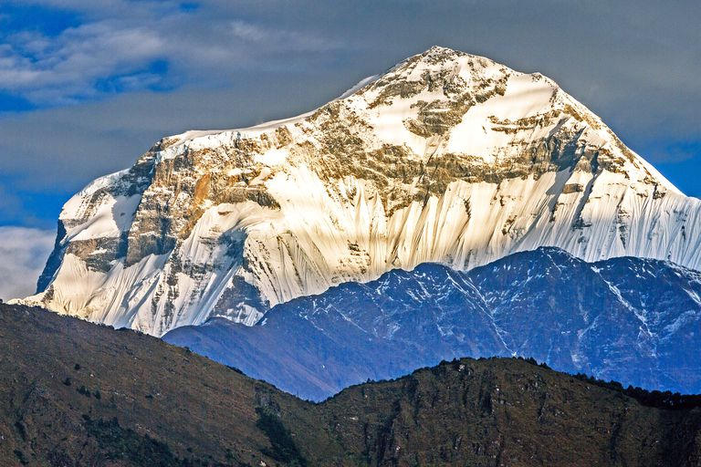
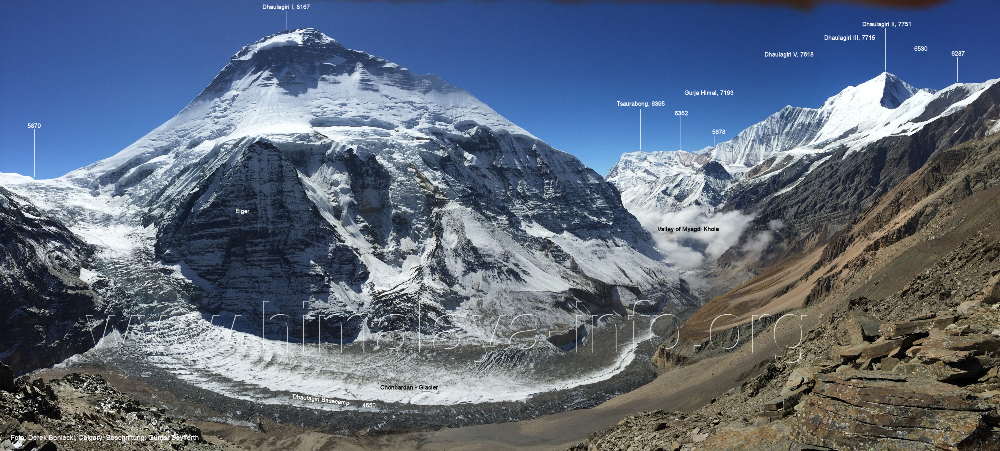
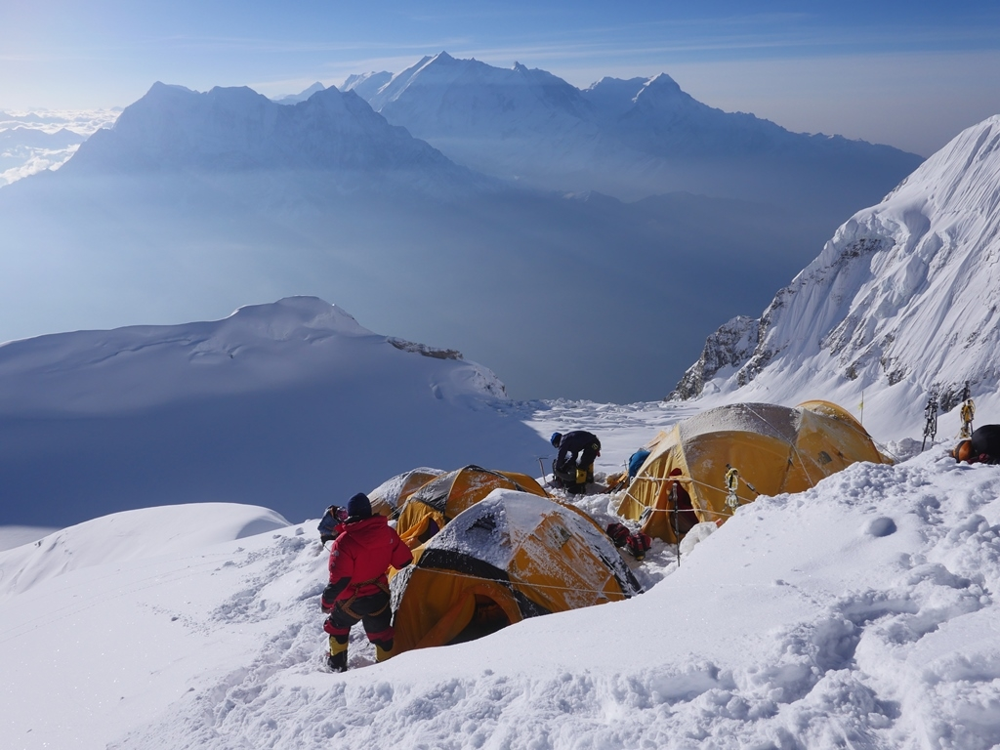
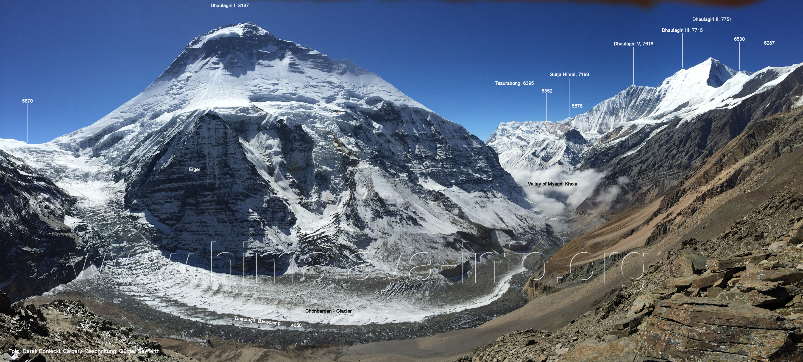
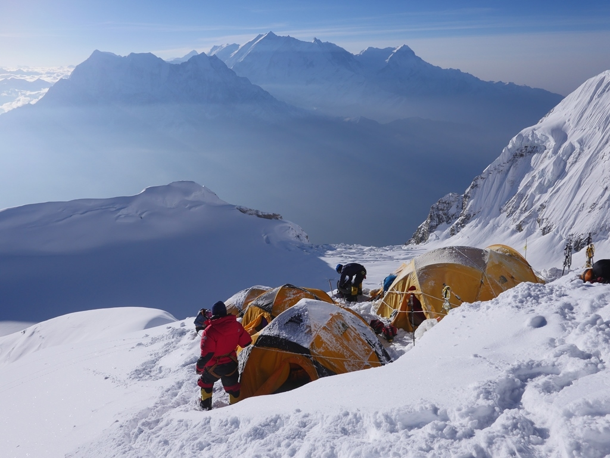

Mt. Dhaulagiri, word's 7th highest peak.
DHAULAGIRI
A pristine trekking circuit which allows you to circleMt. Dhaulagiri, word's 7th highest peak.
The Dhaulagiri massif in Nepal extends 120 km (70 mi) from the Kaligandaki River west to the Bheri. This massif is bounded on the north and southwest by tributaries of the Bheri River and on the southeast by Myagdi Khola. Dhaulagiri I is the seventh highest mountain in the world at 8,167 metres (26,795 ft) above sea level, and the highest mountain within the borders of a single country (Nepal). It was first climbed on May 13, 1960 by a Swiss/Austrian/Nepali expedition.
 The mountain's name is धौलागिरी (dhaulāgirī) in Nepali. This comes from Sanskrit where धवल (dhawala) means dazzling, white, beautiful[3] and गिरि (giri) means mountain.[4] Dhaulagiri I is also the highest point of the Gandaki river basin.
 Annapurna I (8,091m/26,545 ft) is 34 km. east of Dhaulagiri I. The Kali Gandaki River flows between the two in the Kaligandaki Gorge, said to be the world's deepest.[citation needed] The town of Pokhara is south of the Annapurnas, an important regional center and the gateway for climbers and trekkers visiting both ranges as well as a tourist destination in its own right.
 The mountain's name is धौलागिरी (dhaulāgirī) in Nepali. This comes from Sanskrit where धवल (dhawala) means dazzling, white, beautiful[3] and गिरि (giri) means mountain.[4] Dhaulagiri I is also the highest point of the Gandaki river basin.
 Annapurna I (8,091m/26,545 ft) is 34 km. east of Dhaulagiri I. The Kali Gandaki River flows between the two in the Kaligandaki Gorge, said to be the world's deepest.[citation needed] The town of Pokhara is south of the Annapurnas, an important regional center and the gateway for climbers and trekkers visiting both ranges as well as a tourist destination in its own right.